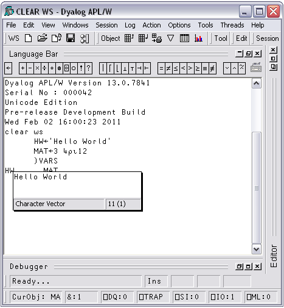
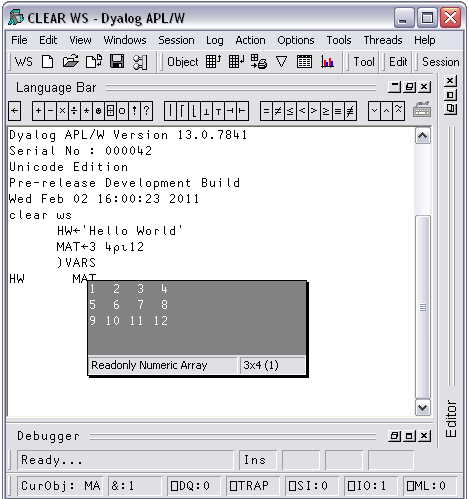
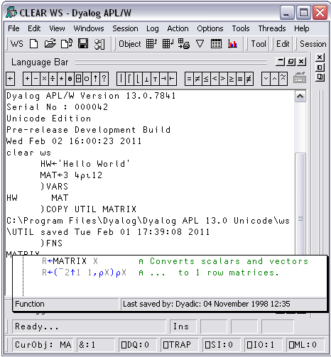

If you hover the mouse pointer over a name in the Session or Debugger window, APL will display a pop-up window containing the value of the symbol under the mouse pointer.
For example, in the following picture the mouse pointer was moved over the name of the variable HW in the Session window.

The next picture illustrates the Value Tip displayed when the mouse is hovered over the name of the variable MAT.

Similarly, if you hover the mouse pointer over the name of a function, the system displays the body of the function as a pop-up, as illustrated below.
